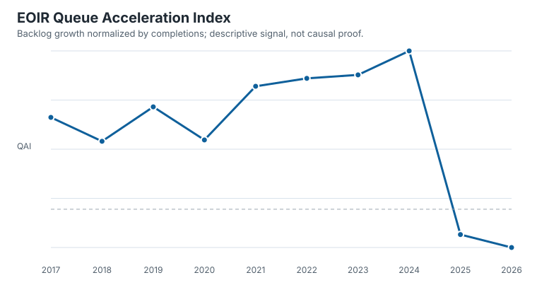

Flagship finding
EOIR backlog pressure is observable without pretending to observe institutional quality.
In the frozen annual snapshot, pending matters rose from 826,488 in 2016 to 3,925,351 in 2024. QAI was positive in every comparable period from 2017 through 2024 and peaked at 1.580 in 2024.
Boundary: this is a descriptive signal of backlog growth relative to recorded completions. It does not identify staffing, causality, intent, or legal compliance.

oico make-figures.Scientific hierarchy
One stable indicator, one beta corpus, three experimental models.
StableQAI
Observable backlog growth normalized by recorded completions.
BetaASI
Document-level accountability specificity in a small adjudicated corpus.
ExperimentalSEDI, Authorization, Procedural Capacity
Useful hypotheses and scenarios that need external calibration.
Research portal